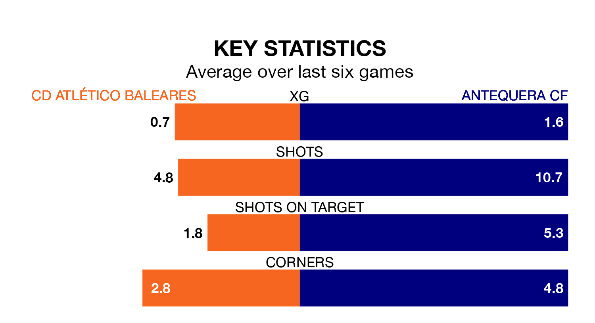

CD Atlético Baleares face Antequera CF at Campo de Son Malferit on Sunday looking to secure a first win in eight Primera Division RFEF Group 2 games.
Atlético Baleares have lost three and drawn four matches since they last earned three points – against CD Alcoyano on December 3.
They face an Antequera side who have won two and drawn two over that time.
Atlético Baleares are 18th in the table after 22 games, of which they have won four and drawn six, earning 18 points.
Antequera are 10 places ahead of the home side in eighth, with nine wins and five draws putting them on 32 points.
With 12 goals in 22 games so far this season, Atlético Baleares are the league's joint-third-lowest scorers with 0.5 goals per game. And they are conceding more than average, letting in 36 goals at a rate of 1.6 per game.
The visitors, meanwhile, are above average scorers, with 1.2 goals per game, compared to a league average of 1.1. They have also conceded 1.2 goals per game.
Atlético Baleares's last match was on February 4, a 3-0 loss against Málaga CF.
Antequera drew 2-2 with Mérida AD last time out, also on Sunday, with Luis Miguel Redondo Fernandez on the scoresheet.
Updated: 10:01 (UTC), 06/02/24